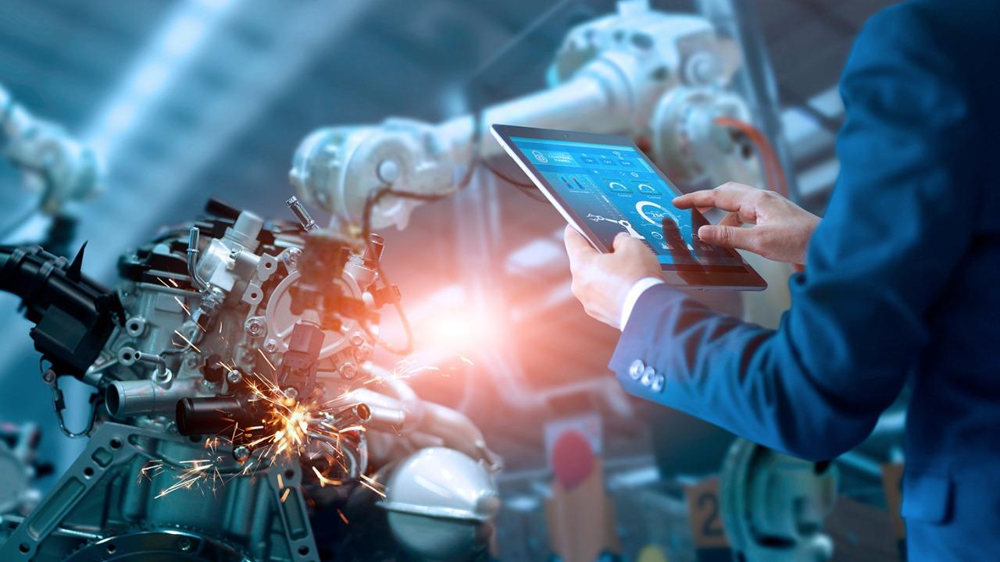

La carrera por adoptar elementos de la Industria 4.0 ya está en marcha entre las empresas metalmecánicas y se ha descubierto que la cuarta revolución traerá beneficios en tres áreas principalmente: Productividad: Durante los próximos cinco a diez años, la Industria 4.0 será adoptada por más compañías, lo que aumentará la productividad en todos los sectores. Las mejoras en la productividad de los costos de conversión, que excluyen el costo de los materiales, variarán del 15 al 25 por ciento. Cuando se tienen en cuenta los costos de los materiales, se lograrán ganancias de productividad del 5 al 8 por ciento. Estas mejoras variarán según la industria. Las empresas metalmecánicas pueden lograr algunas de las mayores mejoras de productividad (20 a 30 por ciento), por ejemplo, y las compañías automotrices pueden esperar aumentos de 10 a 20 por ciento.

Crecimiento de ingresos. La Industria 4.0 también impulsará el crecimiento de los ingresos. La demanda de los fabricantes de equipos mejorados y nuevas aplicaciones de datos, así como la demanda de los consumidores de una variedad más amplia de productos cada vez más personalizados, generará un crecimiento de ingresos adicional. Empleo. Dado al crecimiento que estimula la industria 4.0 conducirá a un aumento del 6 por ciento en el empleo durante los próximos diez años. Y la demanda de empleados en el sector de la ingeniería mecánica puede aumentar aún más, hasta en un 10 por ciento durante el mismo período. Sin embargo, se requerirán diferentes habilidades. A corto plazo, la tendencia hacia una mayor automatización desplazará a algunos de los trabajadores a menudo poco calificados que realizan tareas simples y repetitivas. Al mismo tiempo, el uso creciente de software, conectividad y análisis aumentará la demanda de empleados con competencias en desarrollo de software y tecnologías de TI, como los expertos en mecatrónica con habilidades de software. Es importante que, como empresario metalmecánico, comprendas cómo puedes emplear tecnologías en nuevos casos de uso para ofrecer los mayores beneficios a tus clientes. Estas tecnologías se pueden aprovechar para diferentes ofertas, como la mejora de los sistemas embebidos en red y la automatización, el desarrollo de nuevos productos de software y la entrega de nuevos servicios, como los servicios basados en análisis. Para crear estas ofertas, deben establecer las bases correctas: • Define qué modelo de negocio aprovechar para tus ofertas mejoradas o nuevas. • Construye la base tecnológica, como la base de herramientas para análisis. • Desarrolla la estructura y las capacidades organizativas adecuadas. • Desarrolla asociaciones que son esenciales en el mundo digital. • Participa y da forma a la estandarización tecnológica. Paralelamente, los proveedores de sistemas deben construir una visión basada en escenarios de la evolución de la industria a largo plazo y garantizar que su estrategia los prepare para los escenarios más probables. El cambio tecnológico está creando una serie de nuevas oportunidades y desafíos para la industria metalmecánica, con inteligencia artificial (IA), big data, Internet de las cosas (IoT) y otros proyectos de la Industria 4.0 (la tendencia actual de automatización e intercambio de datos en la fabricación tecnologías) que tienen un impacto en la forma en que los fabricantes operan, automatizan y siguen siendo rentables.